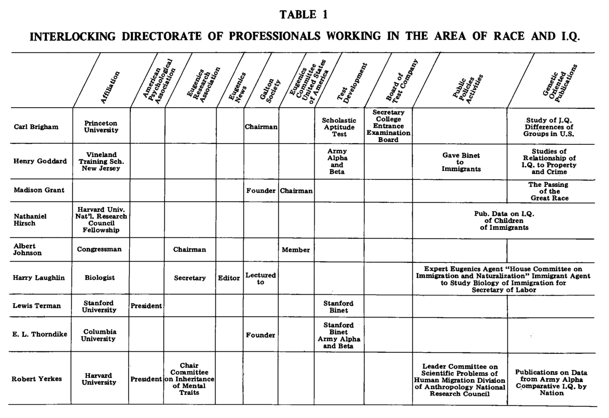
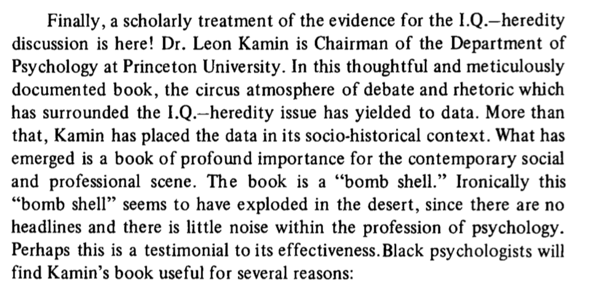
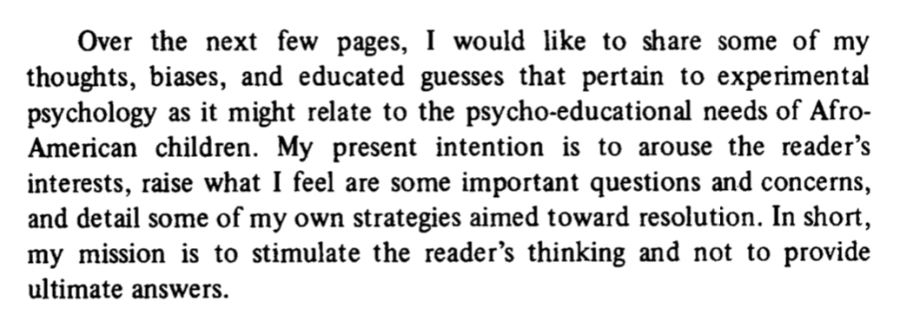
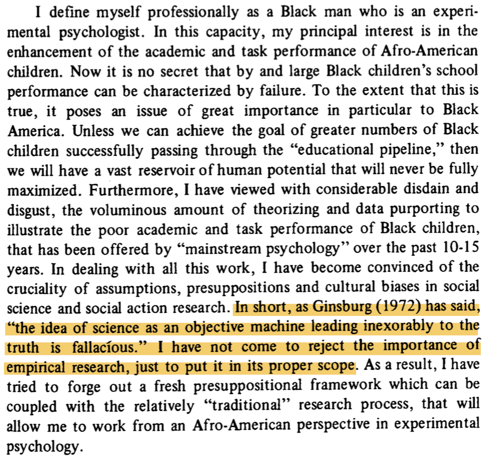
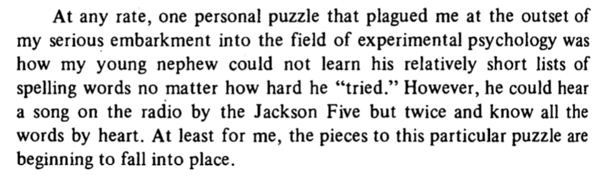

Reading the Journal of Black Psychology
black psychology
ABPsi
Reading the Journal of Black Psychology from the beginning, and writing about it here.
Last knit: 2023-06-26
The Association of Black Psychology has been publishing the Journal of Black Psychology since 1974. I just learned about it. So, I’m reading it because that’s what you do when you find out that you missed an entire foundational field in psychology.
I’m a cognitive psychologist who spends a large part of my research time considering how cognition in general is supported by computations of learning and memory processes. I’m also interested in psychology more broadly: how it fits together as a discipline, and how the institutions of psychology work, how psychology influences society, etc.
My impression of my own field is that it is highly fragmented. There’s lots of everyone doing their own thing. There is no unified field theory of anything. Wondering about the “point” of things in cognitive psychology has sucked years of my life away. I guess I enjoy it, and like many other disciplines, perhaps struggling with the point is part of the point. Points don’t come for free.
Sometimes I’ve used a hole digging metaphor for research. I go dig a new hole somewhere, and convince everyone else that no one looked in the hole before. If you do a good of this, you can dig into that hole for the rest of your life and never have to leave. I have dug some holes that I’d like to get out of.
Relatedly, I was appalled by Psych Science publishing a now retracted racist IQ paper. I hadn’t been paying attention to the scope of racism in my own discipline. By tugging at the thread of the history of IQ research, which I also mostly didn’t learn about in my training, I discovered how much eugenics played a role in founding and propagating psychology (Yakushko 2019).
I’m in the process of climbing out of my research hole to learn about the racist and eugenicist ideologies systemic to psychology. As a part of this work, I found out the Journal of Black Psychology has been dismantling these issues from their inception, so I’m here to learn from the experts.
I’ve already done some reading and skimming through the journal. So, even though I know this work will inform me about structural racism and eugenics in psychology, I also know it will inform me about many other issues that I wasn’t thinking so much about. The papers I have read so far are building towers of perspective over the holes of psychology. I’m excited to read more, I need to start keeping notes:
Let’s start with Vol 1, Issue 1, 1974
Smith (1974)
Smith, W. D. (1974). “Editorial”. In: Journal of Black Psychology 1.1, pp. 5-6.
It’s interesting to flip through the first issue of journals. For example, I found it interesting to flip through the first issue in volume 1 of Psychological Review, which at the time was the journal for the American Psychological Association.
It is obvious when you read the Journal of Black Psychology, that the creation of the journal and new society (the Association of Black Psychologists) was partly motivated by a reaction against the APA. What was the reaction about?
I’ll consider this briefly from the lens of eugenics. Did you know that the founder of Psychological Review, James McKeen Catell, was a eugenicist? That’s something. It’s part of a deeply disturbing structural foundation of psychology. Some of this foundation is not particularly salient. For example, it’s not easy to find the word eugenic or eugenics in Psychological Review (try to find it using Psycinfo).
That’s curious.
However, if you know who is a eugenicist, because they for example founded the whole thing (e.g., Francis Galton), you can see that several known eugenicists published papers in the first issue of Psychological Review. You just have to connect those dots. TBH, it’s really more of a question of who isn’t a eugenicist in that issue.
If you read about eugenics, you learn that eugenicists just want to breed the best people to make society a better place for eternity. They also want to enact negative eugenics on anyone they don’t like, and attempt to eliminate them (e.g., forced sterilizations, Nazi genocide). This is just scratching the surface of the abhorrent practices and ideologies of eugenicists. They talk A LOT about doing this for the betterment of mankind. Their version of betterment is VERY SCARY. Eugenics is also a very complicated and heterogeneous movement that varied over time and place, was widely accepted in society, and often dovetailed with numerous other socially progressive movements.
It is very intriguing to read the very first editorial in Psych Review, which is written by an APA president at the time. Sidenote, did you know that between 1892 and 1947, there were 31 APA presidents that were members or leaders of eugenics societies (Yakushko 2019). Have you ever wondered why that is? Or, say how it was that psychology was both created and weaponized by eugenicists to propagate eugenics policies.
In any case, I haven’t been able to determine precisely whether George Trumbull Ladd was a eugenicist or not when he wrote the presidential address for APA printed in the first issue of Psych review (Ladd 1894). However, I did read the address. It doesn’t say eugenics anywhere. Ladd talks about three things, in order of most to least controversial. Roughly, 1) stats and methods issues, 2) Psychology as a science issues, and 3) Bettering mankind issues.
When discussing 1 & 2, Ladd acknowledges that there are differences of opinion in the room about these issues. When he gets to issue number 3, he says, “on the third of my three points…no considerable divergence of opinion is to be anticipated here”. I know how to read this room. Devoting the final piece of his address to the pressing need to better society is what it sounds like. A massive dogwhistle to eugenicists. In my opinion, Ladd is pointing out that he knows and the audience knows that they all agree that they are eugenicists. Maybe some of these psychologists weren’t card carrying eugenicists. But, more than enough were, for way to long.
Also, the eugenics of white psychologists wasn’t something that disappeared overnight. It hasn’t dissappeared to this day. It became more deeply entrenched in psychology at many levels. Black psychology is partly a revolution against the structures of white racism and eugenics in psychology. And, it is with this context that I truly appreciate reading the first issue in the Journal of Black Psychology. This marks a line in their scholarship announcing their intention to deconstruct white racism in psychology, and also build their own psychology that is not fundamentally a tool for eugenics. Imagine having a psychology that was not used as a tool to wipe people out. It is a brave moment and an honor to read about the Black psychologists who took up this mission.
R. Williams (1974)
Williams, R. (1974). “A History of the Association of Black Psychologists: Early Formation and Development”. In: Journal of Black Psychology 1.1, pp. 9-24.
I’m not a member of APA and I don’t think I’ve ever been to an APA conference. But, if there was one APA conference I would’ve wanted to see, it would be the 77th meeting in 1969. Read the paper to find out why. The Association of Black Psychologists is an independent psychological society, this is a glimpse of the origin story.
This is a rich moment in time, and not being a historian, I’m woefully unequipped to discuss this. One point that I’ll draw out is the issue of testing, that is educational testing.
For example, R. Williams (1974) writes that, “ABPsi adopted the following six-point statement on testing:
The Association of Black Psychologists fully supports those parents who have chosen to defend their rights by refusing to allow their children and themselves to be subjected to achievement, intelligence, aptitude and performance tests, which have been and are being used to:
- Label black children as uneducable;
- Place black children in special classes;
- Potentiate inferior education; .
- Assign black children to lower educational tracks than whites:
- Deny black children higher educational opportunities; and
- Destroy positive intellectual growth and development ofblack children.”
Also, that, “It became increasingly clear as the year progressed that APA did not intend to endorse the moratorium on testing since it had a vested interest in the testing movement. We could not expect the Educational Testing Service to endorse the moratorium either, inasmuch as much of its multimillion-dollar annual budget derives from testing. Neither could we expect the Psychological Corporation (publisher of the Wechsler Intelligence Scales) or Houghton-Mifflin (publisher of the Stanford-Binet) to endorse the testing moratorium. The Black Psychologists decided to move independently of APA. In closing: Charles Thomas has been elected”Honorary Chairman for Life” of ABPsi for his formative pioneer efforts.”
What is the broader context, why did APBsi advocate for a moratorium on testing? First, obviously this form of testing: IQ tests, standardized tests throughout school, SAT, GRE, etc. is abundant in everyday american life right now. As a Canadian growing up I took these provincial tests every 3 years or so. I don’t think we had an SAT, not sure. I took the GRE. I’ve never taken an IQ test. There’s testing everywhere for sure today.
Full disclosure: I don’t have kids, so I haven’t thought about testing a whole lot. In our doctoral program we’ve recently debated whether we will require the GRE or not for admissions this year. We are doing a trial run of not requiring it. I read emails about pros and cons. I didn’t have much to say really. I was/am on sabbatical, and didn’t put time into the issue. I’ve put some time in now. I will now firmly advocate against requiring GREs ever again. Why? Perhaps, you can guess. Eugenics.
If it is not abundantly clear. I despise eugenics. Guess who was behind the organized efforts to test the hell out of schoolchildren everywhere? Eugenicists. Why would they do this? So, they could separate people into desired and undesired groups with pretty science numbers, and then help the desired groups (whites), and hurt the undesired groups, as much as possible. Remember also that eugenicists is another word for many psychologists. I don’t have time here to go into the psychologists responsible for promulgating IQ tests, and then school testing for the purposes of eugenics. But, obviously these horrendous policies impacted the Black community in a profoundly negative way, for a very long time. If Eugenicist psychologists were trying to hurt your children, wouldn’t you call for a moratorium on testing? WHY IS TESTING STILL HAPPENING TODAY?!?!?!?!? This is a moratorium request that has been happening for a while. The Black Psychologists have been leading this movement.
Can you believe we are only at the first actual article past the editorial?
NOTE: I’m going to be bouncing back and forth a bit, and missing things here and there. It’s a big journal.
Hilliard (1976)
Hilliard, A. G. (1976). “A Review of Leon Kamin’s The Science and Politics of IQ”. In: Journal of Black Psychology 2.2, pp. 64-74.
I just ordered the Kamin book on IQ testing. Also, this is a book review worth reading. Consider this table of notable early psychologists who were also eugenicists, from the book review.

Some excerpts that capture several important issues:


Andrews (1976)
Andrews, J. (1976). “An Investigation into the Attitudes and Sexual Behavioral Patterns of Black Mentally Retarded Adults”. In: Journal of Black Psychology 3.1, pp. 20-33.
I can’t remember ever being brought to tears by reading a psychology paper. Andrews (1976) brought me to tears.
This paper is about sexual behavior in Black mentally retarded adults. One of the reasons that this paper brought me tears was to consider what the paper would have said if it wasn’t written by a Black psychologist. For example, can you imagine what a white eugenicist psychologist would say? I can’t imagine a population more vulnerable to the fear and attacks of racists and eugenicists. It’s pretty damn clear they wouldn’t advocate in favor of how to ensure that Black mentally retarded adults have the freedom to enjoy their own expressions of sexuality. Compared to the prevailing alternative, Black psychology is very human. If you’re looking for reasons why Black psychology needs to be a thing…first off, read more Black psychology, and also this right here.
Boykin (1977)
Boykin, A. W. (1977). “Experimental Psychology from a Black Perspective: Issues and Examples”. In: Journal of Black Psychology 3.2, pp. 29-49.
I need to read this paper again. It touches on several issues that are difficult and worth thinking about with respect to experimental psych, and cognition, which I think of as a branch/extension/version of experimental psych.
Note to self to come back here, erase this sentence, and add thinking.
Boykin (1977) begins by saying:

This aptly indicates both the content and style of the remaining prose. For content, as the title promises, we will get some reflections on the science/philosophy of experimental psychology, and some ideas specifically about educating Afro-American children. Basic/applied science is a hanging thread throughout.
As well, I appreciate the style. All too often I read about the science of psychology in terms of a warped purity ideology. You know the one, “There is only one true science, and only science done correctly by the pure and true scientist can be science.” This is not that. There are no “ultimate answers” here, just a bunch of interesting ideas to think about. Boykin goes on to say:

There’s a lot of context that could be brought into the task of scoping experimental psychology, especially with respect to education. Although Boykin (1977) focuses on links between experimental psych and education, but also on the broader question of whether/how so-called “basic” experimental psychology should be “applied”:

Boykin goes on to discuss the empirical research method in terms of usual suspects such as, the role of induction, deduction, determinism/causality, observation/control of regularities in nature, and trust in objective scientists. He presents a argument against the idea that a person can step outside themselves as a dispassionate objective observer, and suggests an alternative notion rooted in African philosophy, that man and nature exist in a relationship of harmonic unity; and from that perspective, self-separation for the purposes of being a neutral observer is an absurdism.
I’m a practicing cognitive psychologist, and I sometimes have the headspace to think about what I practice at this level. Admittedly, I often do not. At some point I ended up roughly embracing my own version of transcendental realism. At the moment, I’m less worried about the possibility of, limits on, or absurdism of objectivism. I’m more worried about what is sometimes behind the research.
For example, in the domain of IQ testing, it is clear that eugenicists had a purpose in using IQ tests. It is also clear that eugenicists were highly organized and deeply infiltrated society with their ideas and policies, especially with respect to this kind of testing. (Acutally, as a sidenote, obviously I am obsessed with eugenics right now, so even though I am ostensibly thinking about what Boykin is saying, I’m also doing that from the lens of other things going on with me right now. So, I totally agree with Boykin about this). In some formal sense, IQ testing is traditionally not apart of experimental psychology, and is more in the vein of differential psychology. So, why am I bringing it up in the context of experimental psychology?
First, I know many modern cognitive psychologists who continue to use IQ tests in their research. TBH, I haven’t had conversations with them about what they are up to. I’ve seen some “discussions” on twitter, and they weren’t pretty. In any case, I suspect most modern psychologists who use IQ tests are not eugenicists. I’m not claiming they are. I further suspect that there are notions about the “neutral” and “objective” nature of scientific tools. For example, one might acknowledge that eugenicists did a bad thing with IQ tests, and then propose that the IQ tests that weren’t bad (they were made with science!), the eugenicists using them were (“IQ tests don’t kill people, eugenecists do?”). Perhaps this argument is easier to swallow with other more “neutral” tests. For example, it’s obvious that IQ tests are biased in numerous ways; for example, see the BITCH-100 test (R. L. Williams 1972).
Nevertheless, the basic ideology is something like tools can never be inherently bad or good, it’s obviously how they are used that make them bad or good. I think some scientists riff on this in terms of motivating basic science. For example, the thinking might be, “I can make any kind of science tool I want, because I am scientist, and this tool will be a science tool, and no one can say if it is bad or good, and I can forget about that question, and I don’t have to take responsibility for my creations, and if I had to think about the ethical implications of research, it would take forever, and someone would find a way to stop me, and then all basic science would be doomed forever.” Sad.
So, to return to IQ tests, it seems there is a strategy to legitimize the measure by pointing at it and saying it is science. In my mind it is an act of juxtaposition, and argument by authority. You see, psychologists are scientists, and they made IQ tests, and therefore IQ tests are science, and all science is neutral, objective and true, and worth doing, so therefore we must continue to use IQ tests forever. We are forced to do this because the prime directive of science bends us to its will. Also we see, there are over 100 years of IQ test research. It is the most sciencey thing in all of psychology, how can it be ignored? If you are against IQ research you are against science!
In any case, I’m wandering a bit, and about to go get lunch. The what is science debate is often a red-herring. In the context of IQ stuff, I think it’s a distraction from the eugenic purposes of IQ tests. Some better questions are:
What are all the ways that IQ tests (and similar tests) have been employed by eugenicists and psychologists to enact, enforce, and maintain eugenic policies.
How much of the above is still going today
When in history, have major organizations responsible for, or complicit in, these acts of eugenics taken the step to apologize for their actions, as a first step to repairing the actions.
If you as a researcher are continuing to engage in a research domain that is clearly eugenic in origin, or even eugenic adjacent (eugenicists are good at cover stories I think), how are you taking steps to be anti-eugenic in your research.
If you are a psychologist, especially one who is not a eugenicist, then you should reflect on whether or not you are doing things that are “accidental eugenics”. That is participating/contributing to a eugenic enterprise that has become structurally a part of modern psychology, even if no one uses those words.
Don’t be an accidental eugenicist. Maybe get a motivational poster if you have a problems slipping back into accidental eugenicism.
I have more questions, this is a work in progress, I’m going on a lunch break.
Still need lunch, but I’m trying to put my finger on a thing.
There many tools of psychology that have been “touched” by eugenics. Does that mean they are still bad? For example, school testing, and things like gifted school programs were more than “touched” by eugenics, they were explicit eugenics policy. Does that mean they are necessarilly bad? Can you do work in these areas and not be an accidental eugenicist? I don’t know the answer to this question. I do know the answer needs to be concrete and specifically anti-eugenics. It can’t be, “everyone knows X or Y is not for eugenics anymore, it’s just a tool, and look, this tool really does make society a better place…”. Well, that’s what the eugenicists said.
Back from lunch, AC broke, days went by, and I’ve got off on a tangent.
Boykin (1977) suggests that the many interests of experimental psychologists (e.g., learning, memory, attention, etc.) ought to find some application in the education of black children. I agree, seems like this basic science should be applied here. At the same time, I don’t think I have any settled opinion on basic/applied science issues in cognition. For example, it’s obvious that there is a tonne of basic cognitive science that is so far away from being applied. Even though coggies use the words learning and memory, and kids use “learning and memory” in school, the concepts of learning and memory as they are strictly meant in the confines of the laboratory are impoverished behond recognition from what goes on in the real-world. My postdoc advisor would sometimes mention that the science of cognition has a timescale of 1 sec, and it’s not hard to see why. I’m not claiming that basic science in this domain can’t ever be applied. I’m saying lots of it can’t right now. Does that mean basic science should stop if it can’t be applied to real problems? I don’t necessarilly think so, the science of cognition is hard. The difficulties of applying basic cognition principles to the classroom is partly evidence of how hard cognition is, and perhaps also evidence of how basic cognition can get carried away with itself.
A personal note. If I look at some major threads in my own research program, I can see some attempts to balance, or at least connect my basic work with applied work. But, even in my best moments, my work has very scant application. For example, I’ve published extensively on the task of skilled typing. I have used this task because it is convenient to collect performance measures (e.g., precise timing from pressing keys on keyboard), and experts abound. In this work, I’ve been mostly interested in testing general ideas about how learning and memory processes work in the context of acquiring a fairly complex motor skill. This might seem very applied on the surface…however, it couldn’t be further from the applied science of typing. I’ll be the first to admit that I have no scientific idea about what you can do to improve your own typing performance besides practice, practice, practice, but you already knew that. I do think that some of my basic work can be applied here, but I haven’t done that application myself.
Anyway, Boykin raises questions about basic/applied science in a way that doesn’t also raise panic about the destruction of basic science. Anecdotally, I’ve seen and heard various concerns raised about “applied” science taking over “basic” science. There needs to be both them, and they ought to exist in harmonic unity.
Boykin is not concerned about the productive nature of the scientific method, only that it be contextualized, and even put to good use within his community. In other words, he spends some time deconstructing some of the objectivity associated with “true blue” experimental psychology. If there was a statue for, “I’m doing experimental psychology, which by its fundamental nature is a value free proposition, and I am just a neutral tool contributing to the great library of knowledge in the sky, I can do no wrong”, it should be knocked down.
More important, Boykin does some constructing too. For example, he describes affective and cognition dimensions of developing children, and argues for the inclusion of another dimension: vervacity. What is vervacity? It reminded me of umami. I grew up without the word umami, but I obviously ate things that had it. Umami is good stuff, just like verve. I’ll leave it to Boykin describe behavioral and psychological vervacity. From him, my takeaway was the contrast between how people move and resonate with ascetic classroom environment versus the vervistic environment of the Black church. As Boyking says, maybe school needs more soulfuness.
Finally, I appreciated the concluding paragraph, if someone didn’t already do this kind of memory experiment, it’s a thesis waiting to happen.

Also, note to self, I wonder to what extent the Boykin’s notion of vervacity has been incorporated into theories of embodied cognition. I just did a quick google scholar search. Boykin (1977) has been cited 64 times, I didn’t see any articles from the embodied cognition literature citing Boykin. Too bad, vervacity seems like a concept worth exploring (this was the first I had come across it in psychology)…OK, just came back from google scholar again, this time searching “vervistic”, and there are a bunch of papers using this word and exploring the concept. Very cool! I’d like to learn more about that, but must press on.
Actually, one more thing. In this paper, Boykin does not kick the tires of his vervistic considerations with experiments, so check out Boykin (1982) which does.
I’m coming back to my reading project. This time I’m going to move a little more quickly across the journal.
Volume 4 Issue 1-2, August 1978
Boykin, A. W. (1978). “Black Psychology and the Research Process: Keeping the Baby but Throwing out the Bath Water”. In: Journal of Black Psychology 4.1-2, pp. 43-64.
Asking great questions about the objectivity of psychological science, and how a black psychology should be explicit in addressing concerns about bias in question asking, and ascertaining merit of the knowledge produced by a research program.
Discusses some examples of subjectivity and philosophical orientation guiding research questions in learning.
Describes Sherwood and Nataupsky (1968, Predicting the conclusions of Negro-white intelligence research from biographical characteristics of the investigator.)
Describes the Milwaukee Project (Strickland, 1973), where black children are systematically extracted from their homes for increasingly longer periods of time (for enrichment), and then show larger IQ gains than children not extracted through the program.
Considers some heuristic values for a 12 stage research process that is reflective about bias concerns for the Black Community.
Pierce, W. D. (1978). “Funding and Deinstitutionalization: The Impact on Minority Community Mental Health Centers”. In: Journal of Black Psychology 4.1-2, pp. 82-90.
Overview of several problems with underfunding and equity in community-based programs for mental health that followed from deinstitutionalization (Community Mental Health Centers Act 1963).
Williams, R. L. and H. Mitchell (1978). “What Happened to ABPsi’s Moratorium on Testing: A 1968 to 1977 Reminder”. In: Journal of Black Psychology 4.1-2, pp. 25-42.
Absolutely fantastic paper covering how multiple organizations respond to the call for a moratorium on testing (by Black Psychologists in 1968) up to 1977.
Volume 6 Issue 1, August 1979
Alex Swan, L. (1979). “Research and Experimentation in Prisons”. In: Journal of Black Psychology 6.1, pp. 47-51.
Critical discussion of research in prisons, “The real question is: Whose concerns have social and behavioral scientists served, and what is the principal ideological guide for research in prisons?”
Simmons, W. (1979). “The Relationship between Academic Status and Future Expectations among Low-Income Blacks”. In: Journal of Black Psychology 6.1, pp. 7-16.
Going to go with smatterings of papers
Early 80s
Jones, R. T. (1980). “Teaching Children to Make Emergency Telephone Calls”. In: Journal of Black Psychology 6.2, pp. 81-93.
Clark, M. L. (1982). “Racial Group Concept and Self-Esteem in Black Children”. In: Journal of Black Psychology 8.2, pp. 75-88.
“The primary purpose of this study was to investigate the relationship of racial group concepts (racial attitudes and racial preferences) to general and specific self-esteem in Black children. The data indicate that no apparent relationship exists, a finding that is supportive of McAdoo (1973, 1978) and Rosenberg (1979). McAdoo (1973, 1978) reported Black children holding negative own-race attitudes and positive self-concepts, and concluded that Black children learn to compartmentalize their racial attitudes and prevent them from influencing self-evaluation. The present results raise serious questions concerning the construct validity of instruments employed by previous researchers who utilized racial preference or racial attitude measures to make implications about self-concept or self-esteem (Bunton & Weissbach, 1974; Rice, Ruiz, & Padilla, 1974). Other researchers have also questioned the past methodologies of racial preference research. Gordon (1976) indicated that many researchers utilized preference measures to assess self-concept in Blacks during 1939-1963, leading to much of the low self-concept results. Banks (1976) questioned the ability of many previous preference studies to statistical- ly prove Black preference for White. The present findings are also contrary to the Black self-hatred doctrine&dquo; posed so frequently by many previous social scientists (see Baldwin, 1979) by providing empirical data to negate the belief that Blacks who internalize negative racial group attitudes from the larger White society would inevitably possess negative self-evaluations.”
Jones, R. S. (1980). “Finding the Black Self: A Humanistic Strategy”. In: Journal of Black Psychology 7.1, pp. 17-26.
Abstract: “This brief paper develops a humanistic strategy for study of Black self-definition. It contrasts the distinction between personality and culture traditionally conceived in the social sciences with the way in which these important constructs are regarded by those utilizing humanistic strategies. Particular attention is given to the utility of humanistic strategy for penetrating Afro-American pre- sentations of self, and an effort has been made to explore humanistic developments in anthropology, history, and sociology, as well as psychology.”
Washington, M. and M. J. Berlowitz (1981). “A Field Study of”Blaxploitation” Films”. In: Journal of Black Psychology 8.1, pp. 41-51.
Two thumbs up for this paper.
Wilkinson, D. Y. (1980). “Play Objects as Tools of Propaganda: Characterizations of the African American Male”. In: Journal of Black Psychology 7.1, pp. 1-16.
Looks at how racism is embedded in toys over a period from the civil war to the depression. Methods include surveying catalogues of toys.
Willie, C. V. (1981). “Dominance in the Family: The Black and White Experience”. In: Journal of Black Psychology 7.2, pp. 91-97.
“Robert Staples (1970) and Jacquelyne Johnson Jackson ( 1973) have called ‘the black matriarchy’; a myth. Jackson stated that even in the presence of evidence against it, some White social scientists continue to write about ‘;black female dominance over black society’; (Jackson, 1973, pp. 186-199). The purpose of this discussion is twofold: (a) to examine patterns of dominance in Black and White families by social class, and (b) to speculate on the reasons why White social scientists continue to ignore these findings.”
Bell, Y. R., & Jackson, M. K. (1984). Assertive Behavior Among Black College Students. Journal of Black Psychology, 11(1), 19–27. https://doi.org/10/d5ccn3
Curtis Banks, W., McQuater, G. V., Ross, J. A., & Ward, W. E. (1983). Delayed Gratification in Blacks: A Critical Review. Journal of Black Psychology, 9(2), 43–56. https://doi.org/10/dsfw9x
- “Past reviews have devoted little critical attention to the body of evidence that relates to this fertile area of theorizing about Black populations (see Mischel, 1966; Renner, 1964). Consequently, much of what recent theorists have inferred from past research and conjectured regarding &dquo;a preference for smaller, immediate rewards&dquo; among Blacks (Mischel, 1966, p. 125), stands in marked contrast to the actual data. The accumulated evidence largely refutes rather than supports the construct validity of immediate gratification preference among blacks”
Houston, L. N. (1984). Black Consciousness and Self-Esteem. Journal of Black Psychology, 11(1), 1–7. https://doi.org/10/bdfzvv
- “As a consequence of the &dquo;freedom movement&dquo; that developed among Blacks in the United States during the mid-1960s and early 1970s, the Black communities began to show a markedly enhanced focus on unity, self-determination, power, and racialpride.Thisfocusresultedina conceptualconsciousnessthatinsistedon a new image and a new agenda for Black America, and the newly established Black awareness would seem to be allied to an elevation in Black self-esteem. Yet, in spite of numerous studies on Black self-esteem, the results have been not only conflicting andd inconclusive, but also devoid of any empirical investigation of a possible linkage between measured Black consciousness and measured self-esteem”
Myers, H. F., Bastien, R. T., & Miles, R. E. (1983). Life Stress, Health, and Blood Pressure in Black College Students. Journal of Black Psychology, 9(2), 1–25. https://doi.org/10/d3skcq
Myers, L. J. (1985). Transpersonal Psychology: The Role of the Afrocentric Paradigm. Journal of Black Psychology, 12(1), 31–42. https://doi.org/10/d6qzvw
- interesting mix of ideas
Smith, R. R., & Lewis, R. (1985). Race as a Self-Schema Affecting Recall in Black Children. Journal of Black Psychology, 12(1), 15–29. https://doi.org/10/c78427
- In the tradition of Bartlett (1932)
- “Black six- and seven-year olds, living in the Philadelphia metropolitan area and participating in summer day camp programs sponsored by various public and private agencies, listened to prerecorded stories while attending to accom- panying picture books. One third of the subjects were as- signed to one of three experimental groups. Subjects in Experimental GroupI listened to two stories with Black characters; subjects in Experimental Group II listened to the two stories with White characters; and subjects in Experi- mental Group III listened to two stories with animal charac- ters. After each story, the children w e r e asked four questions designed to elicit their recall of the story’s events and characters. The results are discussed within the theoretical framework of self-schema. Implications for the effects of educational material and media upon the learning behavior of Black children are examined.”
Steele, R. E., & Davis, S. E. (1983). An Empirical and Theoretical Review of Articles in The Journal of Black Psychology: 1974-1980. Journal of Black Psychology, 10(2), 29–42. https://doi.org/10/btdfth
- Reflective review of publications in JBP up until 1980, this is a continuing tradition in the journal.
- “The results indicated (a) an increase in empirically-based research articles and a decline in the number of political/idealogical ones, (b) a small but significant increase in the number of articles that used the traditional deficit orientation to explain Black behavior, and (c) major methodological problems in several articles. Find- ings focus on the need for explanatory models of behavior based on Afro-graphic experiences of Black people, on the need to recognize the cultural diversity of the Black com- munity,andon thenecessityforgreaterattentiontomethod- ological issues.”
Wyche, L. G., & Novick, M. R. (1984). Standards for Educational and Psychological Testing: The Issue of Testing Bias from the Perspective of School Psychology and Psychometrics. Journal of Black Psychology, 11(1), 43–48. https://doi.org/10/dxz243
- more critical reflection and advocacy on testing issues
late 80s
Baldwin, J. A. (1989). The Role of Black Psychologists in Black Liberation. Journal of Black Psychology, 16(1), 67–76. https://doi.org/10/cck7kg
- powerful piece
Belgrave, F. Z. (1989). Improving Health Outcomes of African Americans: A Challenge for African American Psychologists. Journal of Black Psychology, 16(1), 77–79. https://doi.org/10/d6mg9j
Brown-Collins, A. R., & Sussewell, D. R. (1986). The Afro-American Woman’s Emerging Selves. Journal of Black Psychology, 13(1), 1–11. https://doi.org/10/bz5vxp
Bryant, Z. L., Coleman, M., & Ganong, L. H. (1988). Race and Family Structure Stereotyping: Perceptions of Black and White Nuclear Families and Stepfamilies. Journal of Black Psychology, 15(1), 1–16. https://doi.org/10/fg6sbm
DeShields, J., & DeShields, S. M. (1988). A Commentary on the Third World Concept. Journal of Black Psychology, 14(2), 79–83. https://doi.org/10/b9t784
- on the subtle and isidious third world concept
Fairchild, H. H. (1988). Glorification of Things White. Journal of Black Psychology, 14(2), 73–74. https://doi.org/10/dvqpvv
Gay, J. (1988). The Incidence of Photographs of Racial Minorities in Introductory Psychology Texts. Journal of Black Psychology, 15(1), 77–79. https://doi.org/10/fcpfvz
- “many texts do not reflect, as one might expecty, the racial diversity of the United States”
Ghee, K. L. (1987). Who’s Stereotyping Whom: A Conceptual and Analytical Reinterpretation of the Sager and Schofield (1980) Study. Journal of Black Psychology, 14(1), 17–23. https://doi.org/10/c86ffp
- “The present reinterpretation acknowledges the operation of perceptual categorization in the social cognition of both Blacks and Whites and does not suggest, as does the Sager and Schofield view, that Blacks simply apply White outgroup stereotypes of Blacks onto themselves. It is argued that the original interpretation may reflect an ethnocentric research bias that focuses on only one side of a dyadic process in interpersonal and intergroup perceptions.”
Grubb, H. J. (1987). Intelligence at the Low End of the Curve: Where Are the Racial Differences? Journal of Black Psychology, 14(1), 25–34. https://doi.org/10/b965br
- some critiques and evidence against racial-genetic viewpoint of intelligence
McMillan, M. (1988). The Doll Test Studies-from Cabbage Patch to Self-Concept. Journal of Black Psychology, 14(2), 69–72. https://doi.org/10/cfhtcs
- “The Clark Doll test needs to be laid to rest as a valid indicator of African American children’s self esteem.”
Sapp, M. (1987). Segregation Indexes Are Invalid. Journal of Black Psychology, 14(1), 1–16. https://doi.org/10/ck2bqb
- “In conclusion, even though segregation indexes have not been validated, they are being used as a measure of court ordered desegregation.Specifically,the Taeuber Index has been chosen as the measure of compliance to desegregation in the Cincinnati School District. The major danger of segregation indexes is that more school districts may be required by law to use these as measures of racial balance and desegregation. If more school districts are required by law or agree to use segregation indexes to measure racial balance, the heart of the issues of quality education and equal opportunity that constituted the historic Civil Rights movement will be lost; therefore, Black children of America will be denied a quality education.”
Smith, W. I., & Drumming, S. T. (1989). On the Strategies that Blacks Employ in Deductive Reasoning. Journal of Black Psychology, 16(1), 1–22. https://doi.org/10/fkj8dk
- using Wason card selection task
Early 90s
Abdullah, S. B. (1994). It’s Nation Time for Black Liberation Psychology a Reaction Paper. Journal of Black Psychology, 20(3), 376–381. https://doi.org/10/dw3vv7
- This journal issue has several position papers like this one, that reflect on how Black Psychology is to extract itself (and construct itself) from racist ideology and practice from white european psychology
Barbarin, O. A. (1993). Emotional and Social Development of African American Children. Journal of Black Psychology, 19(4), 381–390. https://doi.org/10/ccqhrt
- Part of a special issue calling attention to needs in this area
Belgrave, F. Z., & Randolph, S. M. (1993). Introduction: Psychosocial Aspects of AIDS Prevention among African Americans. Journal of Black Psychology, 19(2), 103–107. https://doi.org/10/bd6b99
- Part of a special issue calling attention to needs in this area
Burlew, A. K., & Smith, L. R. (1991). Measures of Racial Identity: An Overview and a Proposed Framework. Journal of Black Psychology, 17(2), 53–71. https://doi.org/10/bsw393
Cemovsky, Z. Z. (1993). J. P. Rushton’s Aggregational Errors in Racial Psychology. Journal of Black Psychology, 19(3), 282–289. https://doi.org/10/frpp6z
- correcting some of Rushton’s claims about skull-size and intelligence
Cernovsky, Z. Z. (1994). Rushton’s Defenders and Their Hasty Rejection of the Null Hypothesis. Journal of Black Psychology, 20(3), 325–333. https://doi.org/10/bqpm68
- more criticism of Rushton’s “scientific” racism
Chambers, J. W., Clark, T., Dantzler, L., & Baldwin, J. A. (1994). Perceived Attractiveness, Facial Features, and African Self-Consciousness. Journal of Black Psychology, 20(3), 305–324. https://doi.org/10/d4f2tz
Crane, J. (1994). Exploding the Myth of Scientific Support for the Theory of Black Intellectual Inferiority. Journal of Black Psychology, 20(2), 189–209. https://doi.org/10/fgjxns
- another fantastic paper, the arguments from scientific racism just never go away it seems
Doss, R. C., & Gross, A. M. (1992). The Effects of Black English on Stereotyping in Intraracial Perceptions. Journal of Black Psychology, 18(2), 47–58. https://doi.org/10/c55bpv
Gaines, S. O., & Reed, E. S. (1994). Two Social Psychologies of Prejudice: Gordon W. Allport, W.E.B. Du Bois, and the Legacy of Booker T. Washington. Journal of Black Psychology, 20(1), 8–28. https://doi.org/10/d4pctx
- perspectives on intellectual heritage and underground currents
Ghee, K. L. (1990). The Psychological Importance of Self Definition and Labeling: Black Versus African American. Journal of Black Psychology, 17(1), 75–93. https://doi.org/10/bhh2fj
- Arguments and discussion about labels, support of “African American” over “Black”
Hamilton, S. E. (1993). Identifying African American Gifted Children Using a Behavioral Assessment Technique: The Gifted Children Locator. Journal of Black Psychology, 19(1), 63–76. https://doi.org/10/cn3dv5
- argues in support of reframing the values around assessing giftedness in African American children. Didn’t press on issues of positive eugenics from the european tradition
Helms, J. E. (1993). More Psychologists Discover the Wheel: A Reaction to Views by Penn et al. on Ethnic Preference. Journal of Black Psychology, 19(3), 322–326. https://doi.org/10/cvs6mw
- thoughts on models of racial identity development
Jackson, L. A., & Ervin, K. S. (1991). The Frequency and Portrayal of Black Females in Fashion Advertisements. Journal of Black Psychology, 18(1), 67–70. https://doi.org/10/cj4nf5
- short piece, basic finding is low frequency of portrayals
- Lots of psychologists are interested in “corpuses”, this stands out to me as a case of looking into a corpus that is not held as important to the mainstream at the time.
Johnson, R. (1993). Clinical Issues in the Use of the DSM-III-R with African American Children: A Diagnostic Paradigm. Journal of Black Psychology, 19(4), 447–460. https://doi.org/10/djvn98
- Another fantastic paper
Molock, S. D., Kimbrough, R., Lacy, M. B., McClure, K. P., & Williams, S. (1994). Suicidal Behavior among African American College Students: A Preliminary Study. Journal of Black Psychology, 20(2), 234–251. https://doi.org/10/fcdz33
Ogbonnaya, A. O. (1994). Person as Community: An African Understanding of the Person as an Intrapsychic Community. Journal of Black Psychology, 20(1), 75–87. https://doi.org/10/bgtc67
Payne, M. A., & Furnham, A. (1992). Parental Self-Reports of Child Rearing Practices in the Caribbean. Journal of Black Psychology, 18(2), 19–36. https://doi.org/10/bgnpzc
Schiele, J. H. (1991). An Epistemological Perspective on Intelligence Assessment among African American Children. Journal of Black Psychology, 17(2), 23–36. https://doi.org/10/b3snw2
- more criticism of IQ testing on African American children, with some consideration of expanding tests to include additional desired features.
Sellers, R. M. (1993). A Call to Arms for Researchers Studying Racial Identity. Journal of Black Psychology, 19(3), 327–332. https://doi.org/10/cjvrhh
- more thoughts on developing racial idenity theories
Taylor, D. L., Chitwood, D. D., McElrath, K., & Belgrave, L. L. (1994). Ethnicity, Social Support, and Injection Drug Use. Journal of Black Psychology, 20(1), 36–46. https://doi.org/10/c3r2w3
Late 90s
Allen, B. A., & Butler, L. (1996). The Effects of Music and Movement Opportunity on the Analogical Reasoning Performance of African American and White School Children: A Preliminary Study. Journal of Black Psychology, 22(3), 316–328. https://doi.org/10/cbmsp2
- some positive evidence, in the tradition of Boykin
Bailey, W., Nowicki, S., & Cole, S. P. (1998). The Ability to Decode Nonverbal Information in African American, African and Afro-Caribbean, and European American Adults. Journal of Black Psychology, 24(4), 418–431. https://doi.org/10/chtjbs
Bazargan, M., & Bazargan, S. (1997). Self-Reported Memory Function and Psychological Well-Being Among Elderly African American Persons. Journal of Black Psychology, 23(2), 103–119. https://doi.org/10/bzhqh3
Bowler, R. M., Mergler, D., Huel, G., & Cone, J. E. (1996). Adverse Health Effects in African American Residents Living Adjacent to Chemical Industries. Journal of Black Psychology, 22(4), 470–497. https://doi.org/10/bzn34x
Broman, C. L. (1997). Race-Related Factors and Life Satisfaction Among African Americans. Journal of Black Psychology, 23(1), 36–49. https://doi.org/10/cbtqkd
Dixon, P., & ya Azibo, D. A. (1998). African Self-Consciousness, Misorientation Behavior, and a Self-Destructive Disorder: African American Male Crack-Cocaine Users. Journal of Black Psychology, 24(2), 226–247. https://doi.org/10/fmvnw9
Doverspike, D., & Arthur, Winfred. (1995). Race and Sex Differences in Reactions to a Simulated Selection Decision Involving Race-Based Affirmative Action. Journal of Black Psychology, 21(2), 181–200. https://doi.org/10/d94sb8
- role of competence information
Ewing, K. M., Richardson, T. Q., James-Myers, L., & Russell, R. K. (1996). The Relationship between Racial Identity Attitudes, Worldview, and African American Graduate Students’ Experience of the Imposter Phenomenon. Journal of Black Psychology, 22(1), 53–66. https://doi.org/10/bf32v3
Harrison, A. O., McAdoo, J. L., & McAdoo, H. P. (1995). History of the Empirical Conference on Black Psychology. Journal of Black Psychology, 21(4), 329–331. https://doi.org/10/c23qjc
- short history of this conference, and its role in shaping research/methodology among Black Psychologists
Haynes, N. (1995). How Skewed is the Bell Curve? Journal of Black Psychology, 21(3), 275–292. https://doi.org/10/d2sn8k
- Yet again JBP is a source for critiquing scientific racism, this time the Bell Curve.
Onwuegbuzie, A. J. (1999). Statistics Anxiety among African American Graduate Students: An Affective Filter? Journal of Black Psychology, 25(2), 189–209. https://doi.org/10/cdhhfn
- ” The recruitment and retention of African Americans in graduate schools remains a significant problem. Statistics anxiety has been found to be prevalent among graduate students, being implicated both as a barrier to success in quantitative courses and a barrier to completion of theses and dissertations. To date, it is un- clear whether African American graduate students experience higher levels of statistics anxiety. Thus, the purpose of this study was to compare levels of statis- tics anxiety between African American and Caucasian American graduate stu- dents. A series of t tests revealed that the African American graduate students had higher levels of statistics anxiety than did their Caucasian American coun- terparts. Recommendations for future research are provided. Also, implications for educators responsible for recruiting and retaining African American gradu- ate students are discussed.”
Oshodi, J. E. (1999). The Empty-Pot Healing Approach: Its Origins, Nature, and Practice. Journal of Black Psychology, 25(1), 23–35. https://doi.org/10/d473jw
- “The Oshodi Empty-Pot Healing Approach (OEPHA) is rooted in African ancient traditions and is characterized by Afrocentric-based psychological theories on therapeutic and personality dimensions. The OEPHA aims to create and fortify processes of optimal balance, vitality, harmony, and an index of achievement- survival motives. Therapy undergoes a circle of therapeutic actions in response to the 11 phases of the OEPHA: Entrustment, Expressivement, Ejectment, Elabo- ration, Enactment, Embankment, Empowerment, Ensemblement, Encirclement, Enlightenment, and Enrichment. The operationalization of the OEPHA was shown through a case study.”
Penn, M. L., & Coverdale, C. (1996). Transracial Adoption: A Human Rights Perspective. Journal of Black Psychology, 22(2), 240–245. https://doi.org/10/fmwh2z
- Special issue devoted to this topic
Richard, O. C., & Kirby, S. L. (1997). African Americans’ Reactions to Diversity Programs: Does Procedural Justice Matter? Journal of Black Psychology, 23(4), 388–397. https://doi.org/10/dk8tnz
Utsey, S. O. (1998). Assessing the Stressful Effects of Racism: A Review of Instrumentation. Journal of Black Psychology, 24(3), 269–288. https://doi.org/10/fwbdbh
- Special issue
- psychometric scales
Warfield-Coppock, N. (1995). Toward a Theory of Afrocentric Organizations. Journal of Black Psychology, 21(1), 30–48. https://doi.org/10/d6k36r
Williams, R. L. (1997). The Ebonics Controversy. Journal of Black Psychology, 23(3), 208–214. https://doi.org/10/d5xkv5
- Special issue
2000s
Deciding to skim a little bit differently. So, I’m going to scan through the 2000s and make some notes about general topic areas and domains. NOTE: I went ahead and created some groupings as I read through the titles. These groupings only reflect my haphazard and quick grouping process. There is a clear dedication to intersectionality in this time period and before, and many of the topics below are oftened treated in combination.
African American College students/ Education
- performance predictors
- racial identity, “fit”
- prejudice
- promoting health behaviors
- future orientation
- being a Black student on a White Campus
- achievement gaps
Spirituality & religion
Identity and self concept
- preferred labelling
- international ethnic identity
- moral development
- belief systems
- self esteem
- racial identity attitudes, perceptions of bias
Racial discrimination
- fatigue, stress
- experiences of everyday racism
- coping
- Resilience training
- color-blindness
- skin color/attractiveness
Interracial couples & prejudice
- attitudes toward multiracial children
Family processes/ parenting
- relationship quality
- juvenile offenders
- parenting style
- mainstream vs afro-cultural value socialization
- intersectionality
Community/Neighborhood
- perceptions/attitudes
- Youth programs
- youth leadership
- hurrican katrina
- living in public housing
Clinical/Health
- Substance abuse (special issues)
- attitudes, use, prediction, intervention, prevention, recovery
- Suicide Risk/prevention (Special Issue)
- Mental health services
- Health and healing approaches
- ethics
- well-being
- racism/adverse health outcomes
- condom use
- eating behaviors
- HIV/AIDs (Special Issue)
- attitudes toward seeking help
- depression
- bias in diagnosis
- Health disparities (Special Issue)
- Substance abuse (special issues)
Sexuality
norms
risky behavior and status
Psychology of Black Women (Special Issue)
Development
- chid-rearing (racial identity)
- Adolescents’ expectations
- bullying (body esteem)
Cognitive/Dev
- learning styles, learning transfer, learning environment
- logical reasoning ability
- expression recognition
- culturally structured learning
Emotion
Evo Psych
- body preferences
- attractiveness evaluations
Language
- attitudes toward black english
- code-switching
- affect communication
- afrocentric communication stimuli
Deconstructing IQ Claims
Cultural analysis
- music videos
- stereotype and counterstereotype images
- regional shared/disparate values
- “street-life” perspectives
- music and attitudes
- “acting tough”
I/O
- workplace discrimination policies
- moderators of hiring decisions
High level theory pieces
Content analyses of JBP
history of JBP
Critical positions
deconstructive psychology of african american men
Book reviews
2010s-now
OK, gonna read through the last range of titles up to the present and attempt a something similar to the above, or maybe just pull out some highlights, will see.
- introduces a new brief report format
- so far exploring and expanding upon themes similar to those above
Resiliency and Optimism: An African American Senior Citizen’s Perspective
Proactively Addressing the Shortage of Blacks in Psychology: Highlighting the School Psychology Subfield
This whole special issue: “Special Issue: Pan African Discussion of African Psychology Volume 39 Issue 3, June 2013”
And this one: Volume 44 Issue 8, November 2018
A 12-Year Content Analysis of the Journal of Black Psychology (2000-2011): Implications for the Field of Black Psychology
Some selected papers:
Chandler, D. R. (2010). Proactively Addressing the Shortage of Blacks in Psychology: Highlighting the School Psychology Subfield. Journal of Black Psychology, 37(1), 99–127. https://doi.org/10/chtrpf
Chapman-Hilliard, C., & Adams-Bass, V. (2015). A Conceptual Framework for Utilizing Black History Knowledge as a Path to Psychological Liberation for Black Youth. Journal of Black Psychology, 42(6), 479–507. https://doi.org/10/f89x27
Cokley, K., & Garba, R. (2018). Speaking Truth to Power: How Black/African Psychology Changed the Discipline of Psychology. Journal of Black Psychology, 44(8), 695–721. https://doi.org/10/gftbbv
Graves, S., & Mitchell, A. (2011). Is the Moratorium Over? African American Psychology Professionals’ Views on Intelligence Testing in Response to Changes to Federal Policy. Journal of Black Psychology, 37(4), 407–425. https://doi.org/10/d56z38
Jamison, D. F. (2018). Key Concepts, Theories, and Issues in African/Black Psychology: A View From the Bridge. Journal of Black Psychology, 44(8), 722–746. https://doi.org/10/gftbbw
Nwoye, A. (2015). The Psychology and Content of Dreaming in Africa. Journal of Black Psychology, 43(1), 3–26. https://doi.org/10/f9h5px
Sherry, A. (2011). Book Review: Metzl, J. M. (2010). The Protest Psychosis: How Schizophrenia Became a Black Disease. Boston, MA: Beacon Press. 246 pp. Journal of Black Psychology, 37(3), 381–383. https://doi.org/10/drsgwr
Smith Lee, J. R., & Robinson, M. A. (2019). “That’s My Number One Fear in Life. It’s the Police”: Examining Young Black Men’s Exposures to Trauma and Loss Resulting From Police Violence and Police Killings. Journal of Black Psychology, 45(3), 143–184. https://doi.org/10/gg6jfk
Snowden, L., & Graaf, G. (2019). The “Undeserving Poor,” Racial Bias, and Medicaid Coverage of African Americans. Journal of Black Psychology, 45(3), 130–142. https://doi.org/10/gf2jtc
Special Issue Call for Papers: The COVID-19 Pandemic and Its Effect on the People of African Descent. (2020). Journal of Black Psychology, 46(4), 340–343. https://doi.org/10/gg6jk4
Thelamour, B., & Johnson, D. J. (2016). Exploring Black Immigrants’ and Nonimmigrants’ Understanding of “Acting Black” and “Acting White.” Journal of Black Psychology, 43(3), 280–304. https://doi.org/10/f92x7m
Thomas, A. J., & Blackmon, S. M. (2014). The Influence of the Trayvon Martin Shooting on Racial Socialization Practices of African American Parents. Journal of Black Psychology, 41(1), 75–89. https://doi.org/10/f8mgk3
Watson, N. N., & Hunter, C. D. (2015). “I Had To Be Strong”: Tensions in the Strong Black Woman Schema. Journal of Black Psychology, 42(5), 424–452. https://doi.org/10/f89b6g
White, A. M., Williams, R. L., & Majzler, R. D. (2010). What Makes a Distinguished Black Psychologist? An Empirical Analysis of Eminence. Journal of Black Psychology, 37(2), 131–163. https://doi.org/10/b7577v
Wilton, L., Chiasson, M. A., Nandi, V., Lelutiu-Weinberger, C., Frye, V., Hirshfield, S., Hoover, D. R., Downing, M. J., Lucy, D., Usher, D., & Koblin, B. (2018). Characteristics and Correlates of Lifetime Suicidal Thoughts and Attempts Among Young Black Men Who Have Sex With Men (MSM) and Transgender Women. Journal of Black Psychology, 44(3), 273–290. https://doi.org/10/gdk59n
Woodyard, O. T., & Gadson, C. A. (2018). Emerging Black Scholars: Critical Reflections on the Impact of the Association of Black Psychologists. Journal of Black Psychology, 44(8), 772–790. https://doi.org/10/gftbbx
References
Andrews, James. 1976. “An Investigation into the Attitudes and Sexual Behavioral Patterns of Black Mentally Retarded Adults.” Journal of Black Psychology 3 (1): 20–33. https://doi.org/gg3htg.
Boykin, A. Wade. 1977. “Experimental Psychology from a Black Perspective: Issues and Examples.” Journal of Black Psychology 3 (2): 29–49. https://doi.org/gg3htw.
———. 1982. “Task Variability and the Performance of Black and White Schoolchildren: Vervistic Explorations.” Journal of Black Studies 12 (4): 469–85. https://doi.org/bmmp47.
Hilliard, Asa G. 1976. “A Review of Leon Kamin’s the Science and Politics of IQ.” Journal of Black Psychology 2 (2): 64–74. https://doi.org/gg3hr5.
Ladd, George Trumbull. 1894. “President’s Address Before the New York Meeting of the American Psychological Association.” Psychological Review 1 (1): 1–21. https://doi.org/drzt6z.
Smith, William David. 1974. “Editorial.” Journal of Black Psychology 1 (1): 5–6. https://doi.org/gg3vcr.
Williams, Robert. 1974. “A History of the Association of Black Psychologists: Early Formation and Development.” Journal of Black Psychology 1 (1): 9–24. https://doi.org/gg3hq4.
Williams, Robert L. 1972. “The BITCH-100: A Culture-Specific Test.”
Yakushko, Oksana. 2019. “Eugenics and Its Evolution in the History of Western Psychology: A Critical Archival Review.” Psychotherapy and Politics International 17 (2). https://doi.org/gg3hsf.